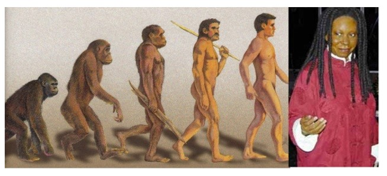

|
|---|
| Feature Article - September 2003 |
| by Do-While Jones |
Discover what evolutionists don't want you to know!
We have put together a five-night seminar which will be presented in Ridgecrest, California, September 21 through 25. In it we have tried to present a quick overview of the arguments against evolution in five one-hour lectures titled Dirty Little Secrets, Chemistry Against Evolution, Geology Against Evolution, Biology Against Evolution, and Engineering Against Evolution.
One of the questions we get is, "If the scientific evidence is against the theory of evolution, then why don't all scientists reject it?" The short answer is that the theory of evolution isn't scientific, it is philosophic. There are philosophic implications of the theory of evolution which force some people to accept the theory despite the fact that it contradicts natural laws.
The theory of evolution gives "scientific" support for racism, which makes it attractive to some people. The biology textbook John Scopes was accused of using to teach biology in the famous Scopes Monkey Trial, concludes its section on evolution with this paragraph:
|
The Races of Man. - At the present time there exist upon the earth five races or varieties of man, each very different from the other in instincts, social customs, and, to an extent, structure. These are the Ethiopian or negro type, originating in Africa; the Malay or brown race, from the islands of the Pacific; the American Indian; the Mongolian or yellow race, including the natives of China, Japan, and the Eskimos; and finally, the highest type of all, the Caucasians, represented by the civilized white inhabitants of Europe and America. 1 [emphasis supplied] |
Racism is less overt in modern evolutionary thinking, but it is still there. You no doubt have seen a picture showing a series of creatures, beginning with a knuckle-walking ape, evolving through several stages ending with a human. They all look pretty much like this one.
|
|
|---|
You never see a picture like this one:
|
 |
|---|
Does the most evolved creature ever look like Whoopie Goldberg? Certainly not. The fully-evolved human is a white male. What are impressionable children to think when they see pictures terminating with white males?
Some have used the theory of evolution to justify rape and sexual infidelity. After all, the argument goes, we evolved from a troop of apes. The Alpha Male of the troop can mate with any female he wants. Rape and infidelity is in our genes. It is part of our evolutionary heritage. Therefore, rape and infidelity are normal, natural, acceptable practices that have been preserved by natural selection.
That argument emphasizes the difference between science and philosophy. Philosophy is what someone thinks. Science is what can be demonstrated in the laboratory. Philosophical truth rests upon the intellect and reputation of the person espousing the philosophy. If you reject the idea, you are rejecting the man who believes it. Egos are bruised. This is abundantly clear from the hate mail we get.
The theory of evolution is really a philosophy that excuses racism, rape, murder, or anything else that promotes the survival of the fittest. Evolution knows no law but the law of the jungle. The theory of evolution is rooted in philosophy, not science.
Evolutionists try desperately to separate the naturalistic origin of life (abiogenesis) from the theory of evolution because they know that countless chemistry experiments have shown that inanimate matter cannot come to life through purely natural means.
The theory of evolution is dead on arrival. It requires some way for chemicals to form living, reproducing creatures that could mutate and evolve into everything else through natural selection. Chemistry denies evolutionists any plausible starting point. Evolution has no chance of winning the race because it is a non-starter.
Many people are unaware that the fossil record does not support the theory of evolution, and, in fact, contains some of the strongest possible evidence against the transformation of one life-form into another.
Charles Lyell, the father of modern geology, said,
|
It is therefore, clear, that there is no foundation in geological facts, for the popular theory of the successive development of the animal and vegetable world, from simplest to most perfect forms; 2 |
The third lecture examines how little geologic evidence there is for human ancestors compared to the geologic evidence that humans and dinosaurs lived at the same time. There should be reasonable criteria for determining if a fossil is a "transitional form" or not. We propose some reasonable criteria that should be applied to the "transitional" fossils which allegedly show whale, bird, and horse evolution.
Furthermore, early geologists misinterpreted many rock formations, supposing them to be much older than they actually are. Scientific observation of modern geologic processes, including floods and volcanic eruptions, show that rock formations identical to those that were previously thought to have taken millions of years to form, can be formed in a few days.
The theory of evolution was reasonable in the nineteenth century, given the general lack of understanding of biological processes then. Modern discoveries in biology, especially cellular biology, make it clear why species can't evolve into other species.
Nineteenth century biologists didn't realize that there was a limit to how much variation could be achieved through breeding. They didn't understand genetics. The fourth lecture shows why there is a limit to variation.
What has really driven the nails into evolution's coffin has been the new discipline of microbiology. Analysis of DNA and proteins that has demolished many of the conjectures evolutionists have made concerning the relationship between various organisms is also presented in the fourth lecture.
It has been scornfully noted by evolutionists that many of the "scientists" against evolution are really "just engineers, not REAL scientists." Indeed, many engineers do reject the theory of evolution because they understand thermodynamics, probability, system design, and information theory. These four disciplines all provide useful insights into why the theory of evolution is scientifically bankrupt.
Engineers are also much more conscious about assumptions that have to be made when making calculations. If the assumptions are wrong, the conclusions are wrong. Radiometric dating is an excellent example of GIGO. (GIGO is engineering slang for "Garbage In, Garbage Out.")
We only have the space here to summarize a few of the things we will be presenting at the Evolution Exposé. We hope you will come and hear the whole story for yourself.
The Evolution Exposé will be presented at 555 W. Las Flores Blvd., Ridgecrest, California (by special arrangement with the Seventh-day Adventist Church). It will begin each evening at 7 PM sharp, and last about one hour (not so sharp). These will be live lectures by Dave Pogge, including PowerPoint presentations and a few scientific experiments. Every effort will be made to make the material understandable to anyone with a minimal science background. Video cameras and audio tape recorders are welcome, provided you can use them without bothering the people around you.
| Quick links to | |||
|---|---|---|---|
| Science Against Evolution Home Page |
Back issues of Disclosure (our newsletter) |
Web Site of the Month |
Topical Index |
Footnotes:
1
Hunter, Civic Biology, 1914
(Ev)
2
Charles Lyell, Princliples of Geology, Volume I, 1830 (republished 1990 by the University of Chicago Press), page 153
(Ev)